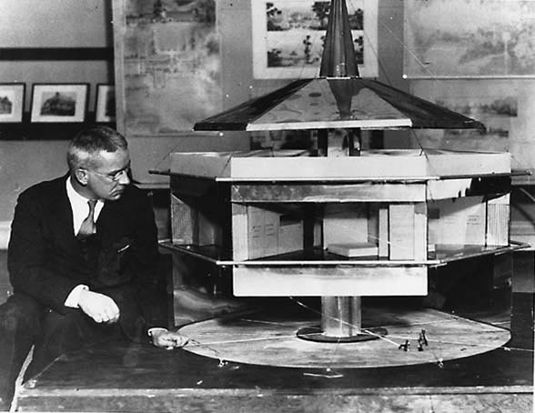

By Loretta Lorance
|
On today's homefront very little thought is given to throwing a load of laundry into the machine, stacking the dishes into the dishwasher and quickly running the vacuum before jumping into the car for a quick trip to the store to pick up dinner. Washing machines, dishwashers, vacuums, automobiles and numerous other machines are more or less givens as accessories to contemporary life. Of course, some people do not possess these accouterments, but, most can be rented or used at commercial facilities. Whether they are owned or let, the power to operate these various machines is obligingly available. At the end of the 20th century, these types of machines and the power to run them have become integral parts of modern life.
So entwined have mechanical devices become with modern life that the not so distant past, before they were established as necessary adjuncts to it, is often viewed with nostalgia and gratitude for the lessons learned during the preceding centuries of drudgery. In a Darwinian view of the history of household technology it is easy to accept that today's home has naturally benefitted form the progress of science and technology.1 And, if the path of this progression were traced, the beginnings would be found long before the beginnings of the Industrial Revolution. However, if the interest were the point of conjunction between the home, technology and readily available energy, it would be found in the 1920s. On the corners of this 1920s intersection between the home, technology and readily available energy stand the housewife, domestic servants and household appliances. As technology produced more opportunities for women in industry and business, less were willing to spend long hours working for low wages as domestic servants.2 Correspondingly, those who were willing to serve as domestics were in a position to demand better wages. Middle-class housewives, whose budgets could not accommodate the increase in the cost of domestic help, would be more likely to purchase appliances to ease their own workload than wealthy woman who would probably purchase appliances for their servants to use. Numerous manually operated appliances were marketed before the 1920s, but, the rapid electrification of urban areas during that decade3 was complimented by increases in the types and availability of electric appliances which were much easier to use than the manual models.4 Electric appliances began to be championed as 'electric servants'5 that would make housework less strenuous and less time consuming while being more efficient and more manageable than traditional domestic servants. To persuade housewives that their products would cleanly, safely, and efficiently decrease housework electric companies and appliance manufacturers utilized articles, expositions, women's magazines and advertisements as tools of propaganda. For example, in the second half of the 1920s the Electrical Development Association (EDA), an English organization, began to heavily promote the development of the British domestic market6 through a variety of advertisements emphasizing the rewards reaped by housewives who used electricity. One 1928 ad featured a fashionably dressed woman leaving to play golf during the day because, as the caption insists, she was 'no longer tied down by housework' since she 'spring cleans with electricity' which was readily available 'at the flip of a switch.'7 The meaning here is obvious: the use of electricity will allow the housewife to keep her home clean, her appearance neat, and enjoy leisure activities even if she can no longer rely on hired help. In an earlier ad from the American Corporation General Electric, the 1917 The Lamp that Lights the Way to Lighter Housework featuring the Edison Mazda lamp, electricity was promoted as a way for the housewife to carry out her duties, such as washing, ironing, toasting and vacuuming, in a well lit environment with the aid of her agreeable and competent electric servants.8 Not only would electricity benefit the housewife by easing her work load and solving her servant problem, it would do so in a safe and healthy manner. This was another argument posed to increase the appeal of electricity to housewives. For example, a 1927 EDA poster was carefully composed to communicate this exact message. Bright white and rising triumphantly in the center of a dense black background is an athletic figure holding a globe in its raised right hand. Looping from the bottom of the globe and held up by the figure's left hand is a 'cord' that curves down to a power station within a white silhouetted skyline extending across the width of the poster. Dramatically positioned under the skyline in commanding white text is the caption that boldly advises: "For Health's Sake Use Electricity." 9 The promotion of electricity as safe, clean, and efficient served to emphasize the disadvantages of using its competitors, coal and gas. The use of coal, which must be carefully tended and emits a grimy soot when burned, was limited to fireplaces and stoves. The heavily polluted skies of 19th century cities are legendary, but rarely are the thick air and sooty surfaces of homes heated with coal addressed.10 Gas, coal gas in the 19th century and natural gas in the 20th, is more flexible since pipes to supply it can be installed throughout walls and floors. But, coal gas, which is made from carbonized coal, had an unpleasant odor and was somewhat unsafe. If a gas appliance was not completely turned off, or, if a pilot light went out, the resulting build-up of gas could lead to an explosion. Furthermore, the exposed flame of a gas light could start a fire. Electricity, on the other hand was espoused as clean, invisible, odorless, flexible and tireless. At any time one simply flips a switch or inserts a plug to have an unlimited and convenient source of energy. The primary disadvantage to the use of electricity is the availability of outlets. This is, however, a potentially easy problem to remedy. In the 1920s magazines such as Building Age and Electrical World featured articles concerned with ways to include the optimal number outlets in a house to provide the housewife with ample opportunities to use appliances. 11 Therefore, by the 1920s the use of electricity was promoted as the perfect way to ease the drudgery of housework without reliance on servants. Electricity was unlike coal which both required constant tending and produced soot and in preference to gas which was less safe. Praise and promise were heaped upon electricity, electric appliances and their capacity to improve the lot of the housewife. Emil Rathenau, a German industrialist who was a leader in the development of the electrical industry in Europe, thought that electric light would be like a little man, a helper of the housewife. Rathenau also advocated that the use of electricity would help to bring housewife out of the hidden darkness of the household.12 Similarly, in 1895 Thomas Edison, the inventor of the incandescent light bulb who founded the first distribution center of electricity in Manhattan in 1881, claimed that "technology will give less attention to the home because the home will need less: [the housewife] will be rather a domestic engineer than a domestic laborer, with the greatest of handmaidens, electricity at her service."13 Rathenau's and Edison's visions of the freedom that electricity could bring the housewife were echoed by exhibition organizers in the late 19th and early 20th centuries.14 For example, at the 1893 Columbia World's Fair in Chicago numerous international models of electric appliances were exhibited in the Electricity Building. In addition, an electric kitchen was also exhibited at the Fair.15 Beginning in 1908 The Daily Mail, an English newspaper, sponsored an annual 'Ideal Home' exhibition featuring improvements and innovations in housing design and household technology.16 Appliances were essential to the Daily Mail's concept of the 'Ideal Home' and manufacturers used the expositions as opportunities to simultaneously plug known appliances and introduce new products. According to Deborah Ryan, this combination of the status quo with the promise of invention demonstrated that an 'Ideal Home' was only attainable in theory, not practice. Ryan writes: From 1923 onwards, the Ideal Home Exhibition...concentrated on the presentation of a constantly evolving and progressing new commercial culture of home-making. In effect, the modern housewife could never achieve her 'ideal home,' because technology was constantly improving; each ideal was surpassed by another. Each Ideal Home Exhibition promised to surpass the previous one with its labour-saving innovations and the promise of improvement.17 Still, in the late 1920s, numerous electric appliances were available to assist the housewife in her quest for the ideal home. Manufacturers aggressively advertised these products. The ads usually featured one or more time- and labor-saving products in combination with the image of a relaxed housewife effortlessly using an appliance. An English division of General Electric, Magnet Household Appliances, drew upon both the notion of the 'Ideal Home' and the advantage of using electric appliances in its 1927 ad campaign entitled 'Miss Magnet's Ideal Home.' Cheerfully using an electric iron, 'Miss Magnet' is surrounded by the full range of available electric appliances: waffle iron, toaster oven, toaster, vacuum, stove, light, fan, cream separator, and washing machine. The text expounds "the advantages secured by the use" of these products: Where cooking is hygienic, uniform and economical; where cleaning is an easy and pleasant job, but thorough and complete; where ample heating, clean, smokeless, fumeless is always available.18 Although this ad was ostensibly selling appliances, subtly included was the message that the magic of electricity made it all possible. In their quest to convince women of the benefits provided by electricity and to increase revenues, electric companies began to offer advice and assistance to housewives in the late 1920s. In 1928 the need for electric companies to educate housewives about the virtues of electricity was explicitly explained by Sophia Malicki: A utility company should be the community household management center. It should answer the plea of housewives for a place to which they can turn for advice and assistance on problems of efficient management of the home...The fact that women need to place a higher value on their energy and time brings a direct responsibility to the utilities for a liberal portion of education in standards of health and decency. Our services supersede the largest portion of drudgery in housekeeping, and ours the blame if so many women are still doing physically work for which machinery is developed. This is a social problem and ours is a fault chiefly of omission. 19 One approach to remedying the need to educate housewives was to sponsor courses in 'electrical equipment economics' which were intended to teach women the use and benefits of appliances.20 A second strategy was to establish women's councils on electricity such as the Electrical Association of Women in Great Britain and the Women's Committee of the National Electric Light Association in the United States. The motivating factor behind these tactics was to increase profits by increasing the domestic use of electricity. Electric companies understood that housewives would willingly consume more kilowatts if they were convinced of the rewards gained by using the tools run by electricity.21 And, housewives would more often use these tools if they could confidently and efficiently operate them. In addition, housewives would be more eager to learn about these tools if the tools would help bolster their self-images as modern, self-sufficient women who now summoned 'electric servants' to help them manage their homes.22 Therefore, by expanding the domestic market in the 1920s, electric companies could help offset the cost of urban electrification and ensure continued income by convincing housewives that electricity and electrical appliances were necessary tools for modern living. So convincing was this argument that by the late 1920s the image of the 'Ideal Home' was determined more by the number of appliances and gadgets that were in it than by its design. This has prompted some 20th century historians to find more significance in the effect that appliances have had on homes than in changes in the design of the house. For example, Adrian Forty wrote in The Electric Home, 1975, that "the principal change in the home environment this century has not occurred through the improvements in architecture or building standards, but as a result of the equipment that has become available for people to put in their homes."23 Although such an argument might seem apparent to a historian in the 1970s, it was not a consideration to the majority of architects working in the 1920s. At that time the primary consideration was to change the physical characteristics of a house to make a better living environment rather than to make a better working environment for the housewife. A comparison of the designs for two innovative houses from the late 1920s, Le Corbusier's Villa Savoye and Buckminster Fuller's Dymaxion House, will clarify this point. Le Corbusier was a Swiss architect who practiced in France and is credited as one of the founders of the International Style of architecture. The Villa Savoye, 1928-31, is considered to be an early masterpiece of Corbusier's since it is a textbook example of his five points of architecture: free facade, free plan, ribbon windows, pilotis, and roof garden. Fuller, an American inventor and designer, adapted some of these for his 1928-29 Dymaxion House: free facade, living quarters lifted one story above the ground, and recreational use of the roof. Corbusier used the space under the house to provide quarters for the servants and to enhance circulation whereas Fuller thought this an ideal place to park the family's vehicle. Corbusier and Fuller shared the idea that standardized, pre-fabricated and mass-produced components should be used in the construction of their houses. Corbusier used these to design his ideal of a modern house that was based on the orthogonal model. Fuller used these elements to design his ideal of a modern house with an unusual design: a hexagonal donut supported by a inflated central mast and stabilized with cables.  In addition, because Fuller recognized that a house is not only the place to which a man returns after work, but is also the place where a housewife spends most of her time, he included an unusual complement of appliances in his ideal home which he understood would be cleaned and managed by the housewife, not servants. For example, the kitchen, which had "nothing to do with a servant," included a dishwasher, an oven and cooking grills with keys, not burners into which food could fall. To save space as well as time, shelving was designed to revolve and bring stored items to the person desiring them. Fuller also incorporated a complete laundry system that would wash and dry clothing in 3 minutes. There was also a central ventilating unit that was intended to circulate air throughout the house and clean the incoming air to keep the interior dust free. This would eliminate one of the most mundane tasks: dusting. The central ventilating unit would additionally serve as an environmental control system to maintain an optimal temperature abolishing the need for bedclothes and to wash bedding. This was the explanation given for placing the nude doll on the bed in the model of the house: to show that the temperature was perfect.24 However, the doll could have been a promotional device to show how carefree and relaxing life in a Dymaxion House would be for the housewife since Fuller specifically stated he included the appliances "to ease the drudgery of the housewife." 25 Despite the claims made by Fuller, the Dymaxion House was never advanced beyond the model stage. There are a number of reasons given for this which include that it was technologically impossible to manufacture the house in the 1920s and that the design was too weird, too futurist.26 In theory, however, Fuller's idea of including appliances as part of the house was not at all farfetched since paradigms for many of the appliances he stipulated were already considered standard home equipment by the late 1920s. This is verified by the itemized list of the 7 to 11 electric appliances commonly found in homes James Ryan published in October 1929. These were: washing machines; vacuum cleaners; refrigerators; flat irons; toasters; curling irons; percolators; heating pads; corn poppers; vibrators; and manglers (regardless of the name these were used to iron sheets).27 Ryan's list demonstrates that by the late 1920s electric companies and the manufacturers of electric appliances were successful in convincing women that their products would lessen the burden of housework. They were successful because these products do make housework easier. Washing machines eliminate the need to boil water, use a scrub board and hand-wring clothes. Dryers remove the back-straining chore of hanging up wet laundry to dry. Electric irons stay warm and do not require constant shuffling back and forth from the stove in order to keep them hot. Refrigerators prevent the need to make daily trips to the market and also the need to salt or smoke meats to preserve them. Vacuum cleaners are more efficient than brooms; they also eliminate the excessive manual labor of beating the dust and dirt out of rugs. The Hoover Company capitalized on this early in its advertising campaigns. One 1924 ad shows an elegantly dressed and bejeweled lady daintily manipulating a capable vacuum with her right hand while her left holds the machine's cord. The graphics reinforce the machine's efficiency: directly under the vacuum is black text that has just been cleaned. On either side of this is dull gray text awaiting the gentle sweeping action of the vacuum's brushes.28 Such advertisements may have been a little overzealous in their claims, but, they were correct in asserting that household appliances make housework less strenuous. Unfortunately, these appliances have eased the drudgery of one type of household labor only to find it replaced by another: the role of family chauffeur. Of course, it can be argued that being in a car going places is less confining that being inside a house cleaning. This argument does overlook the fact that driving family members to their different activities is still performing duties, still giving service to someone else. This change from house-bound service to car-bound service was noticed very early in the drive to make electric appliances a part of every household. Wilma Cary used this as the plot for her 1928 prize winning essay, Modern Revelation, written for the National Electric Light Association, a commercial organization in the United States.29 Cary pits the old fashioned housewife, Joyce, who does not yet have electric appliances against her new neighbor, Mrs. Stuart, who is always running off with the children in the family car. Joyce believes that Mrs. Stuart must be a terrible housekeeper until Joyce visits her neighbor one day. During this visit Joyce discovers that Mrs. Stuart's secret is household appliances. With the assistance of these 'electric servants' Mrs. Stuart is able to keep her house spotless, the laundry washed and ironed, and take her children on daily excursions. After having completed all these chores, Mrs. Stuart can still make a delicious dinner for her husband on her electric stove. Amazing! Joyce sees the light and decides to persuade her husband to purchase these appliances for her to make her life easier and more enjoyable.30 The argument of Ruth Schwartz Cowan's 1983 book More Work for Mother provides a different perspective for interpreting A Modern Revelation. Although Joyce may have been correct in her assessment that Mrs. Stuart's appliances eased her housework, Joyce was not as accurate in thinking of Mrs. Stuart's use of the car as increasing her freedom. Schwartz Cowan has shown that when the time devoted to chauffeuring family members is factored into the amount of time a woman spends on housework there is very little difference between the total for a woman in the 1920s and her late 20th century counterpart.31 |
|
| Yet, electric companies and appliance manufacturers could not anticipate the effect that the automobile would have on family life. In the 1920s electricity and household appliances were forms of technology intended to ease the burden of housework within the home. So successful were these electric servants that they came to be considered necessary parts of modern life, both as it was and as it was envisioned. This explains why Buckminster Fuller included them in his 1920s interpretation of the ideal home, the Dymaxion House. He also somewhat prophetically brought the family vehicle into the realm of the home by conveniently providing space for it under the house. The car, however, is one form of technology that extends the family sphere beyond the confines of the home. As a result, electricity and electrical appliances may have lessened the labor of cleaning a house, doing laundry and feeding a family, but, the car has prevented any decrease in the amount of time a housewife is required to devote to caring for her family.
|